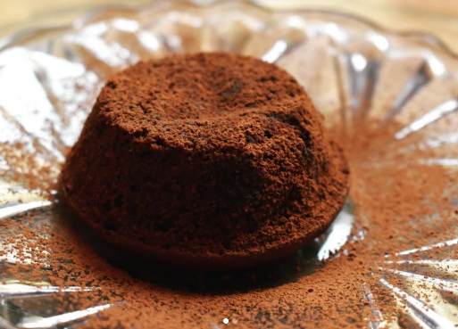

Choklad Fondant

Ett enkelt recept
Detta behöver du för 4st:
100 g mörk choklad
100 g smör
2 ägg
1 dl strösocker
0,5 dl kakao
0,25 dl vetemjöl
Så här gör du:
Sätt ugnen på 225 grader.
Smörj fyra små ugnsfasta formar och pudra med lite kakao.
Finhacka chokladen.
Smält smöret i en kastrull och låt chokladen smälta i det varma smöret.
Blanda ägg och socker i en bunke och rör tills sockret löst upp sig. Vispa inte, bara rör.
Häll i chokladen i äggblandningen under omrörning, sikta i kakao och mjöl. Blanda till en jämn smet.
Fyll formarna med chokladsmeten.
Baka i mitten av ugnen ca 8-12 minuter.
Vänd upp fondanten på en tallrik.
Servera gärna med färska bär, vispgrädde eller vaniljglass.